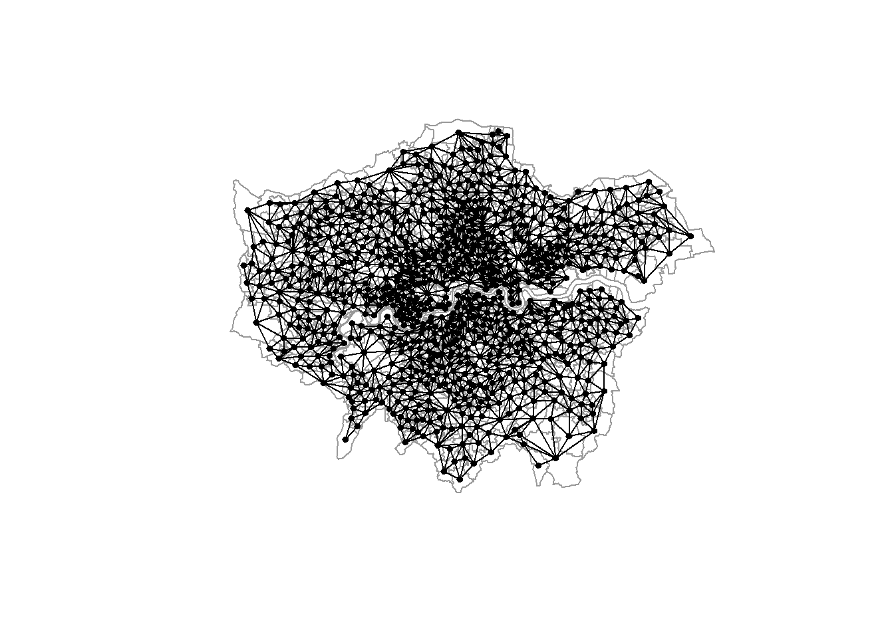
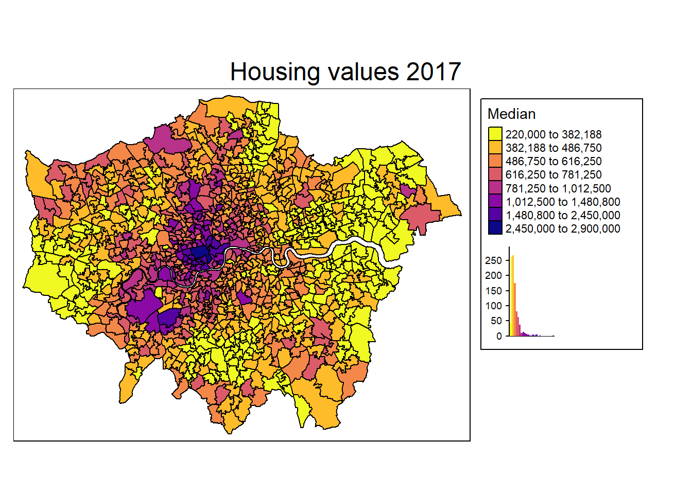

Part 2: Analysing spatial data
Tobias Rüttenauer
June 19, 2021
Required packages
pkgs <- c("sf", "mapview", "spdep", "spatialreg", "tmap", "viridisLite") # note: load spdep first, then spatialreg
lapply(pkgs, require, character.only = TRUE)Session info
sessionInfo()## R version 4.1.0 (2021-05-18)
## Platform: x86_64-w64-mingw32/x64 (64-bit)
## Running under: Windows 10 x64 (build 19042)
##
## Matrix products: default
##
## locale:
## [1] LC_COLLATE=English_United Kingdom.1252
## [2] LC_CTYPE=English_United Kingdom.1252
## [3] LC_MONETARY=English_United Kingdom.1252
## [4] LC_NUMERIC=C
## [5] LC_TIME=English_United Kingdom.1252
##
## attached base packages:
## [1] stats graphics grDevices utils datasets methods base
##
## other attached packages:
## [1] viridisLite_0.4.0 tmap_3.3-1 spatialreg_1.1-8
## [4] Matrix_1.3-3 spdep_1.1-8 spData_0.3.8
## [7] sp_1.4-5 dplyr_1.0.6 rnaturalearth_0.1.0
## [10] nngeo_0.4.3 mapview_2.10.0 sf_1.0-0
##
## loaded via a namespace (and not attached):
## [1] sass_0.4.0 jsonlite_1.7.2 splines_4.1.0
## [4] gtools_3.9.2 bslib_0.2.5.1 expm_0.999-6
## [7] highr_0.9 stats4_4.1.0 yaml_2.2.1
## [10] LearnBayes_2.15.1 pillar_1.6.1 lattice_0.20-44
## [13] glue_1.4.2 uuid_0.1-4 digest_0.6.27
## [16] RColorBrewer_1.1-2 colorspace_2.0-1 leaflet.providers_1.9.0
## [19] htmltools_0.5.1.1 XML_3.99-0.6 pkgconfig_2.0.3
## [22] raster_3.4-10 stars_0.5-3 gmodels_2.18.1
## [25] purrr_0.3.4 scales_1.1.1 webshot_0.5.2
## [28] gdata_2.18.0 brew_1.0-6 svglite_2.0.0
## [31] satellite_1.0.2 tibble_3.1.2 proxy_0.4-26
## [34] generics_0.1.0 farver_2.1.0 ellipsis_0.3.2
## [37] leafsync_0.1.0 magrittr_2.0.1 crayon_1.4.1
## [40] deldir_0.2-10 evaluate_0.14 fansi_0.5.0
## [43] nlme_3.1-152 MASS_7.3-54 lwgeom_0.2-6
## [46] class_7.3-19 tools_4.1.0 lifecycle_1.0.0
## [49] stringr_1.4.0 munsell_0.5.0 compiler_4.1.0
## [52] jquerylib_0.1.4 e1071_1.7-7 systemfonts_1.0.2
## [55] rlang_0.4.11 tmaptools_3.1-1 classInt_0.4-3
## [58] units_0.7-2 grid_4.1.0 leafpop_0.1.0
## [61] dichromat_2.0-0 htmlwidgets_1.5.3 crosstalk_1.1.1
## [64] leafem_0.1.6 base64enc_0.1-3 rmarkdown_2.8
## [67] boot_1.3-28 codetools_0.2-18 abind_1.4-5
## [70] DBI_1.1.1 R6_2.5.0 knitr_1.33
## [73] rgeos_0.5-5 utf8_1.2.1 KernSmooth_2.23-20
## [76] stringi_1.6.2 parallel_4.1.0 Rcpp_1.0.6
## [79] vctrs_0.3.8 png_0.1-7 leaflet_2.0.4.1
## [82] tidyselect_1.1.1 xfun_0.23 rnaturalearthdata_0.1.0
## [85] coda_0.19-4Load spatial data
See previous file.
load("msoa_spatial.RData")Spatial interdependence
We can not only use coordinates and geo-spatial information to connect different data sources, we can also explicitly model spatial (inter)depence in the analysis of our data. In many instance, accounting for spatial dependence might even be necessary to avoid biased point estimates and standard errors. The reason is our observations are often not independent and identically distributed: ‘everything is related to everything else, but near things are more related than distant things’ (Tobler 1970).
However, even if we would receive unbiased estimates with conventional methods, using the spatial information inherent in the data can help us detect specific patterns and spatial relations.
\({\boldsymbol{\mathbf{W}}}\): Connectivity between units
To analyse spatial relations, we first need to define some sort of connectivity between units (e.g. similar to network analysis). There is an ongoing debate about the importance of spatial weights for spatial econometrics and about the right way to specify weights matrices Neumayer and Plümper (2016). The following graph shows some possible options in how to define connectivity between units.

Figure: Spatial data linkage, Source: Bivand, Pebesma, and Gómez-Rubio (2008)
In spatial econometrics, the spatial connectivity (as shown above) is usually represented by a spatial weights matrix \({\boldsymbol{\mathbf{W}}}\): \[ \begin{equation} \boldsymbol{\mathbf{W}} = \begin{bmatrix} w_{11} & w_{12} & \dots & w_{1n} \\ w_{21} & w_{22} & \dots & w_{2n} \\ \vdots & \vdots & \ddots & \vdots \\ w_{n1} & w_{n2} & \dots & w_{nn} \end{bmatrix} \end{equation} \] Note: The diagonal elements \(w_{i,i}= w_{1,1}, w_{2,2}, \dots, w_{n,n}\) of \(\boldsymbol{\mathbf{W}}\) are always zero. No unit is a neighbour of itself.
Contiguity weights
A very common type of spatial weights. Binary specification, taking the value 1 for neighbouring units (queens: sharing a common edge; rook: sharing a common border), and 0 otherwise.
Contiguity weights \(w_{i,j} =\)
1 if \(i\) and \(j\) neighbours
0
\[ \begin{equation} \boldsymbol{\mathbf{W}} = \begin{bmatrix} 0 & 0 & 1 \\ 0 & 0 & 0 \\ 1 & 0 & 0 \end{bmatrix} \nonumber \end{equation} \]
Sparse matrices
Problem of `island’ (units without neighbours)
Lets create a contiguity weights matrix (Queens neighbours) for the London MSOAs. Therefore, we create a neighbours list (nb), which is an efficient way of storing \({\boldsymbol{\mathbf{W}}}\).
# Contiguity (Queens) neighbours weights
queens.nb <- poly2nb(msoa.spdf,
queen = TRUE,
snap = 1) # we consider points in 1m distance as 'touching'
summary(queens.nb)## Neighbour list object:
## Number of regions: 983
## Number of nonzero links: 5620
## Percentage nonzero weights: 0.5816065
## Average number of links: 5.717192
## Link number distribution:
##
## 2 3 4 5 6 7 8 9 10 11 12 13
## 9 40 132 268 279 159 63 19 6 5 2 1
## 9 least connected regions:
## 160 270 475 490 597 729 755 778 861 with 2 links
## 1 most connected region:
## 946 with 13 links# Lets plot that
plot(st_geometry(msoa.spdf), border = "grey60")
plot(queens.nb, st_centroid(st_geometry(msoa.spdf)),
add = TRUE, pch = 19, cex = 0.6)
# We can also transform this into the matrix
W <- nb2mat(queens.nb, style = "B")
print(W[1:10, 1:10])## [,1] [,2] [,3] [,4] [,5] [,6] [,7] [,8] [,9] [,10]
## 1 0 0 0 0 0 0 0 0 0 0
## 2 0 0 1 0 0 0 0 0 0 0
## 3 0 1 0 0 1 0 0 0 0 0
## 4 0 0 0 0 0 1 0 0 0 1
## 5 0 0 1 0 0 1 1 0 0 0
## 6 0 0 0 1 1 0 1 0 1 1
## 7 0 0 0 0 1 1 0 1 1 0
## 8 0 0 0 0 0 0 1 0 0 0
## 9 0 0 0 0 0 1 1 0 0 1
## 10 0 0 0 1 0 1 0 0 1 0Distance based weights
Another common type uses the distance \(d_{ij}\) between each unit \(i\) and \(j\).
- Inverse distance weights \(w_{i,j} = \frac{1}{d_{ij}}\)
\[ \begin{equation} \boldsymbol{\mathbf{W}} = \begin{bmatrix} 0 & \frac{1}{d_{ij}} & \frac{1}{d_{ij}} \\ \frac{1}{d_{ij}} & 0 & \frac{1}{d_{ij}} \\ \frac{1}{d_{ij}} & \frac{1}{d_{ij}} & 0 \end{bmatrix} \nonumber \end{equation} \]
Dense matrices
Specifying thresholds may be useful (to get rid of very small non-zero weights)
For now, we will just specify a neighbours list with a distance threshold of 3km using dnearneigh(). An alternative would be k nearest neighbours using knearneigh(). We will do the inverse weighting later.
# Crease centroids
coords <- st_geometry(st_centroid(msoa.spdf))## Warning in st_centroid.sf(msoa.spdf): st_centroid assumes attributes are
## constant over geometries of x# Neighbours within 5km distance
dist_3.nb <- dnearneigh(coords, d1 = 0, d2 = 3000)
summary(dist_3.nb)## Neighbour list object:
## Number of regions: 983
## Number of nonzero links: 22086
## Percentage nonzero weights: 2.285652
## Average number of links: 22.46796
## Link number distribution:
##
## 1 2 3 4 5 6 7 8 9 10 11 12 13 14 15 16 17 18 19 20 21 22 23 24 25 26
## 4 3 7 13 11 14 14 17 26 22 26 30 33 34 46 34 59 43 38 30 25 19 22 15 21 14
## 27 28 29 30 31 32 33 34 35 36 37 38 39 40 41 42 43 44 45 46 47
## 23 17 17 23 28 19 26 24 29 24 27 25 22 18 8 10 12 5 3 2 1
## 4 least connected regions:
## 158 160 463 959 with 1 link
## 1 most connected region:
## 545 with 47 links# Lets plot that
plot(st_geometry(msoa.spdf), border = "grey60")
plot(dist_3.nb, coords,
add = TRUE, pch = 19, cex = 0.6)
Normalization of \({\boldsymbol{\mathbf{W}}}\)
Normalizing ensures that the parameter space of the spatial multiplier is restricted to \(-1 < \rho > 1\), and the multiplier matrix is non-singular. Again, how to normalize a weights matrix is subject of debate (LeSage and Pace 2014; Neumayer and Plümper 2016).
Normalizing your weights matrix is always a good idea. Otherwise, the spatial parameters might blow up – if you can estimate the model at all.
Row-normalization
Row-normalization divides each non-zero weight by the sum of all weights of unit \(i\), which is the sum of the row.
\[ \frac{w_{ij}}{\sum_j^n w_{ij}} \]
Spatial lags are average values of neighbours
Proportions between units (distance based) get lost
Can induce asymmetries: \(w_{ij} \neq w_{ji}\)
For instance, we can use row-normalization for the Queens neighbours created above, and create a neighbours list with spatial weights
queens.lw <- nb2listw(queens.nb,
style = "W") # W ist row-normalization
summary(queens.lw)## Characteristics of weights list object:
## Neighbour list object:
## Number of regions: 983
## Number of nonzero links: 5620
## Percentage nonzero weights: 0.5816065
## Average number of links: 5.717192
## Link number distribution:
##
## 2 3 4 5 6 7 8 9 10 11 12 13
## 9 40 132 268 279 159 63 19 6 5 2 1
## 9 least connected regions:
## 160 270 475 490 597 729 755 778 861 with 2 links
## 1 most connected region:
## 946 with 13 links
##
## Weights style: W
## Weights constants summary:
## n nn S0 S1 S2
## W 983 966289 983 356.6902 4018.36Maximum eigenvalues normalization
Maximum eigenvalues normalization: Divide each non-zero weight by overall maximum eigenvalue \(\lambda_{max}\). Each element of \(\boldsymbol{\mathbf{W}}\) is divided by the same scalar parameter.
\[ \frac{\boldsymbol{\mathbf{W}}}{\lambda_{max}} \]
Interpretation may become more complicated
Keeps proportions of connectivity strengths across units (relevant esp. for distance based \(\boldsymbol{\mathbf{W}}\))
For instance, we can use eigenvalue normalization for the inverse distance neighbours. We use nb2listwdist() to create weight by inverse distance and normalize in one step.
idw.lw <- nb2listwdist(dist_3.nb,
x = coords, # needed for idw
type = "idw", # inverse distance weighting
alpha = 1, # the decay parameter for distance weighting
style = "minmax") # for eigenvalue normalization
summary(idw.lw)## Characteristics of weights list object:
## Neighbour list object:
## Number of regions: 983
## Number of nonzero links: 22086
## Percentage nonzero weights: 2.285652
## Average number of links: 22.46796
## Link number distribution:
##
## 1 2 3 4 5 6 7 8 9 10 11 12 13 14 15 16 17 18 19 20 21 22 23 24 25 26
## 4 3 7 13 11 14 14 17 26 22 26 30 33 34 46 34 59 43 38 30 25 19 22 15 21 14
## 27 28 29 30 31 32 33 34 35 36 37 38 39 40 41 42 43 44 45 46 47
## 23 17 17 23 28 19 26 24 29 24 27 25 22 18 8 10 12 5 3 2 1
## 4 least connected regions:
## 158 160 463 959 with 1 link
## 1 most connected region:
## 545 with 47 links
##
## Weights style: minmax
## Weights constants summary:
## n nn S0 S1 S2
## minmax 983 966289 463.6269 23.92505 1117.636Spatial Autocorrelation
If spatially close observations are more likely to exhibit similar values, we cannot handle observations as if they were independent.
\[ \mathrm{E}(\varepsilon_i\varepsilon_j)\neq \mathrm{E}(\varepsilon_i)\mathrm{E}(\varepsilon_j) = 0 \]
This violates a basic assumption of the conventional OLS model. In consequence, ignoring spatial dependence can lead to
biased inferential statistics
biased point estimates (depending on the DGP)
Detection: Visualization
There is one very easy and intuitive way of detecting spatial autocorrelation: Just look at the map. We do so by using tmap for plotting the housing values.
mp1 <- tm_shape(msoa.spdf) +
tm_fill(col = "Value",
#style = "cont",
style = "fisher", n = 8,
title = "Median",
palette = viridis(n = 8, direction = -1, option = "C"),
legend.hist = TRUE) +
tm_borders(col = "black", lwd = 1) +
tm_layout(legend.frame = TRUE, legend.bg.color = TRUE,
#legend.position = c("right", "bottom"),
legend.outside = TRUE,
main.title = "Housing values 2017",
main.title.position = "center",
title.snap.to.legend = TRUE)
mp1 
## [1] "#F0F921" "#FEBC2A" "#F48849" "#DB5C68" "#B93289" "#8B0AA5" "#5402A3"
## [8] "#0D0887"Detection: Moran’s I
Global Moran’s I test statistic: \[ \begin{equation} \boldsymbol{\mathbf{I}} = \frac{N}{S_0} \frac{\sum_i\sum_j w_{ij}(y_i-\bar{y})(y_j-\bar{y})} {\sum_i (y_i-\bar{y})}, \text{where } S_0 = \sum_{i=1}^N\sum_{j=1}^N w_{ij} \end{equation} \]
Relation of the deviation from the mean value between unit \(i\) and neighbours of unit \(i\). Basically, this measures correlation between neighbouring values.
Negative values: negative autocorrelation
Around zero: no autocorrelation
Positive values: positive autocorrelation
# Global Morans I test of housing values based on contiguity weights
moran.test(msoa.spdf$Value, listw = queens.lw, alternative = "two.sided")##
## Moran I test under randomisation
##
## data: msoa.spdf$Value
## weights: queens.lw
##
## Moran I statistic standard deviate = 37.238, p-value < 2.2e-16
## alternative hypothesis: two.sided
## sample estimates:
## Moran I statistic Expectation Variance
## 0.7068094990 -0.0010183299 0.0003613048# Global Morans I test of housing values based on idw
moran.test(msoa.spdf$Value, listw = idw.lw, alternative = "two.sided")##
## Moran I test under randomisation
##
## data: msoa.spdf$Value
## weights: idw.lw
##
## Moran I statistic standard deviate = 70.475, p-value < 2.2e-16
## alternative hypothesis: two.sided
## sample estimates:
## Moran I statistic Expectation Variance
## 0.7260392810 -0.0010183299 0.0001064319Spatial Regression Models
There are a bunch of different techniques to model spatial dependence and spatial processes (LeSage and Pace 2009). Here, we will just cover a few of the most common techniques / econometric models. One advantage of the most basic spatial model (SLX) is that this method can easily be incorporated in a variety of other methodologies, such as machine learning approaches. Halleck Vega and Elhorst (2015), LeSage.2014.0, and Rüttenauer (2019) provide article-length introductions.
There are three basic ways of incorporating spatial dependece.
Spatial Error Model (SEM)
- Clustering on Unobservables
\[ \begin{equation} \begin{split} {\boldsymbol{\mathbf{y}}}&=\alpha{\boldsymbol{\mathbf{\iota}}}+{\boldsymbol{\mathbf{X}}}{\boldsymbol{\mathbf{\beta}}}+{\boldsymbol{\mathbf{u}}},\\ {\boldsymbol{\mathbf{u}}}&=\lambda{\boldsymbol{\mathbf{W}}}{\boldsymbol{\mathbf{u}}}+{\boldsymbol{\mathbf{\varepsilon}}} \end{split} \end{equation} \]
Spatial Autoregressive Model (SAR)
- Interdependence
\[ \begin{equation} {\boldsymbol{\mathbf{y}}}=\alpha{\boldsymbol{\mathbf{\iota}}}+\rho{\boldsymbol{\mathbf{W}}}{\boldsymbol{\mathbf{y}}}+{\boldsymbol{\mathbf{X}}}{\boldsymbol{\mathbf{\beta}}}+ {\boldsymbol{\mathbf{\varepsilon}}} \end{equation} \]
Spatially lagged X Model (SLX)
- Clustering on Spillovers in Covariates
\[
\begin{equation}
{\boldsymbol{\mathbf{y}}}=\alpha{\boldsymbol{\mathbf{\iota}}}+{\boldsymbol{\mathbf{X}}}{\boldsymbol{\mathbf{\beta}}}+{\boldsymbol{\mathbf{W}}}{\boldsymbol{\mathbf{X}}}{\boldsymbol{\mathbf{\theta}}}+ {\boldsymbol{\mathbf{\varepsilon}}}
\end{equation}
\]
Moreover, there are models combining two sets of the above specifications.
Spatial Durbin Model (SDM)
\[ \begin{equation} {\boldsymbol{\mathbf{y}}}=\alpha{\boldsymbol{\mathbf{\iota}}}+{\boldsymbol{\mathbf{X}}}{\boldsymbol{\mathbf{\beta}}}+{\boldsymbol{\mathbf{W}}}{\boldsymbol{\mathbf{X}}}{\boldsymbol{\mathbf{\theta}}}+ {\boldsymbol{\mathbf{\varepsilon}}} \end{equation} \]
Spatial Durbin Error Model (SDEM)
\[ \begin{equation} \begin{split} {\boldsymbol{\mathbf{y}}}&=\alpha{\boldsymbol{\mathbf{\iota}}}+{\boldsymbol{\mathbf{X}}}{\boldsymbol{\mathbf{\beta}}}+{\boldsymbol{\mathbf{W}}}{\boldsymbol{\mathbf{X}}}{\boldsymbol{\mathbf{\theta}}}+ {\boldsymbol{\mathbf{u}}},\\ {\boldsymbol{\mathbf{u}}}&=\lambda{\boldsymbol{\mathbf{W}}}{\boldsymbol{\mathbf{u}}}+{\boldsymbol{\mathbf{\varepsilon}}} \end{split} \end{equation} \]
Combined Spatial Autocorrelation Model (SAC)
\[ \begin{equation} \begin{split} {\boldsymbol{\mathbf{y}}}&=\alpha{\boldsymbol{\mathbf{\iota}}}+\rho{\boldsymbol{\mathbf{W}}}{\boldsymbol{\mathbf{y}}}+{\boldsymbol{\mathbf{X}}}{\boldsymbol{\mathbf{\beta}}}+ {\boldsymbol{\mathbf{u}}},\\ {\boldsymbol{\mathbf{u}}}&=\lambda{\boldsymbol{\mathbf{W}}}{\boldsymbol{\mathbf{u}}}+{\boldsymbol{\mathbf{\varepsilon}}} \end{split} \end{equation} \]
Note that all of these models assume different data generating processes (DGP) leading to the spatial correlation or pattern we observe in the data. Although there are specifications tests, it is generally not possible to let the data decide which one is the true underlying DGP (Cook, Hays, and Franzese 2015; Rüttenauer 2019). However, there might be theoretical reasons to guide the model specification (Cook, Hays, and Franzese 2015).
Just because SAR is probably the model most commonly used does not mean it is the best choice or the most robust alternative. In contrast, various studies (Halleck Vega and Elhorst 2015; Rüttenauer 2019; Wimpy, Whitten, and Williams 2021) highlight the advantages of the relative simple SLX model. Moreover, this specification can basically be incorporated in any other statistical method.
Spatial Regression Models: Example
To estimate spatial models, we can currently use spdep or spatialreg. They contain the same functions, but spatial regression models will be made defunct in spdep in future releases, and will only be available in spatialreg.
SAR
Lets estimate a spatial SAR model using the lagsarlm() with contiguity weights. Here we use the median housing values as depended variable. We include population density (POPDEN), the percentage of tree cover (canopy_per), and the number of pubs (pubs_count)
hv_1.sar <- lagsarlm(log(Value) ~ log(POPDEN) + canopy_per + pubs_count,
data = msoa.spdf,
listw = queens.lw,
Durbin = FALSE) # we could here extend to SDM
summary(hv_1.sar)##
## Call:lagsarlm(formula = log(Value) ~ log(POPDEN) + canopy_per + pubs_count,
## data = msoa.spdf, listw = queens.lw, Durbin = FALSE)
##
## Residuals:
## Min 1Q Median 3Q Max
## -0.701583 -0.126770 -0.013526 0.113585 0.885312
##
## Type: lag
## Coefficients: (asymptotic standard errors)
## Estimate Std. Error z value Pr(>|z|)
## (Intercept) 2.34991935 0.26979188 8.7101 < 2.2e-16
## log(POPDEN) -0.00656500 0.01010056 -0.6500 0.5157
## canopy_per 0.00437247 0.00096848 4.5148 6.338e-06
## pubs_count 0.00339695 0.00066231 5.1289 2.914e-07
##
## Rho: 0.81488, LR test value: 812.14, p-value: < 2.22e-16
## Asymptotic standard error: 0.020564
## z-value: 39.627, p-value: < 2.22e-16
## Wald statistic: 1570.3, p-value: < 2.22e-16
##
## Log likelihood: 81.90148 for lag model
## ML residual variance (sigma squared): 0.041654, (sigma: 0.20409)
## Number of observations: 983
## Number of parameters estimated: 6
## AIC: -151.8, (AIC for lm: 658.33)
## LM test for residual autocorrelation
## test value: 43.85, p-value: 3.5444e-11This looks pretty much like a conventional model output, with some additional information: a highly significant hv_1.sar$rho of 0.81 indicates strong positive spatial autocorrelation. In substantive terms, housing prices in the focal unit positively influence housing prices in neighbouring units, which again influences housing prices among the neighbours of these neighbours, and so on.
NOTE: interpreting the coefficients or covariates in a SAR model seldomly makes sense, because of the spillovers and feedback loops in \(\boldsymbol{\mathbf{y}}\) mentioned above!
SEM
SEM models can be estimated using errorsarlm().
hv_1.sem <- errorsarlm(log(Value) ~ log(POPDEN) + canopy_per + pubs_count,
data = msoa.spdf,
listw = queens.lw,
Durbin = FALSE) # we could here extend to SDM
summary(hv_1.sem)##
## Call:errorsarlm(formula = log(Value) ~ log(POPDEN) + canopy_per +
## pubs_count, data = msoa.spdf, listw = queens.lw, Durbin = FALSE)
##
## Residuals:
## Min 1Q Median 3Q Max
## -0.6517136 -0.1255899 -0.0090777 0.1069794 0.7484496
##
## Type: error
## Coefficients: (asymptotic standard errors)
## Estimate Std. Error z value Pr(>|z|)
## (Intercept) 13.32527965 0.09204716 144.7658 < 2.2e-16
## log(POPDEN) -0.08515645 0.01498954 -5.6811 1.339e-08
## canopy_per 0.00689488 0.00157390 4.3807 1.183e-05
## pubs_count 0.00078552 0.00078907 0.9955 0.3195
##
## Lambda: 0.85212, LR test value: 837.93, p-value: < 2.22e-16
## Asymptotic standard error: 0.018563
## z-value: 45.903, p-value: < 2.22e-16
## Wald statistic: 2107.1, p-value: < 2.22e-16
##
## Log likelihood: 94.7968 for error model
## ML residual variance (sigma squared): 0.039582, (sigma: 0.19895)
## Number of observations: 983
## Number of parameters estimated: 6
## AIC: -177.59, (AIC for lm: 658.33)In this case hv_1.sem$lambda gives us the spatial parameter. In a spatial error model, we can interpret the coefficients directly, as in a conventional linear model.
SLX
Above, we could have estimated SDM and SDEM models using the Durbin option. To estimate SLX models, we can either use lmSLX() directly, or we can create \(\boldsymbol{\mathbf{W}} \boldsymbol{\mathbf{X}}\) manually and use that in any available model fitting function.
hv_1.slx <- lmSLX(log(Value) ~ log(POPDEN) + canopy_per + pubs_count,
data = msoa.spdf,
listw = queens.lw,
Durbin = TRUE) # use a formula to lag only specific covariates
summary(hv_1.slx)##
## Call:
## lm(formula = formula(paste("y ~ ", paste(colnames(x)[-1], collapse = "+"))),
## data = as.data.frame(x), weights = weights)
##
## Residuals:
## Min 1Q Median 3Q Max
## -0.79338 -0.19863 -0.04346 0.16392 1.39421
##
## Coefficients:
## Estimate Std. Error t value Pr(>|t|)
## (Intercept) 11.688384 0.102148 114.426 < 2e-16 ***
## log.POPDEN. -0.060335 0.023521 -2.565 0.010461 *
## canopy_per 0.008649 0.002597 3.330 0.000899 ***
## pubs_count 0.003553 0.001233 2.882 0.004032 **
## lag.log.POPDEN. 0.289264 0.029571 9.782 < 2e-16 ***
## lag.canopy_per 0.010337 0.003412 3.030 0.002512 **
## lag.pubs_count 0.015908 0.001691 9.407 < 2e-16 ***
## ---
## Signif. codes: 0 '***' 0.001 '**' 0.01 '*' 0.05 '.' 0.1 ' ' 1
##
## Residual standard error: 0.3102 on 976 degrees of freedom
## Multiple R-squared: 0.2924, Adjusted R-squared: 0.288
## F-statistic: 67.2 on 6 and 976 DF, p-value: < 2.2e-16In SLX models, we receive the direct effects of covariates as well as the effects of the spatially lagged variables. Here, we can interpret the coefficients directly. For instance, lets look at population density: 1) a high population density in the focal unit is related to lower housing prices, but 2) a high population density in the neighbouring areas in related to higher housing prices (while keeping population density in the focal unit constant). This might indicate that areas with a low population density in central regions of the city (high pop density around) have higher housing prices. We could try testing this interpretation by including the distance to the city centre as a control.
Another way of estimating the same model is lagging the covariates first.
# Loop through vars and create lagged variables
msoa.spdf$log_POPDEN <- log(msoa.spdf$POPDEN)
vars <- c("Value", "log_POPDEN", "canopy_per", "pubs_count")
for(v in vars){
msoa.spdf[, paste0("w.", v)] <- lag.listw(queens.lw,
var = st_drop_geometry(msoa.spdf)[, v])
}
# Alternatively:
w_vars <- create_WX(st_drop_geometry(msoa.spdf[, vars]),
listw = queens.lw,
prefix="w")
head(w_vars)## w.Value w.log_POPDEN w.canopy_per w.pubs_count
## [1,] 843550.0 4.662014 9.201539 37.000000
## [2,] 353666.7 3.300901 19.324093 1.333333
## [3,] 329000.0 4.009795 15.861733 1.571429
## [4,] 337000.0 3.630360 25.492108 1.400000
## [5,] 316650.0 3.993660 17.011171 1.000000
## [6,] 317375.0 3.876070 23.598908 1.000000And subsequently we use those new variable in a linear model.
hv_1.lm <- lm (log(Value) ~ log(POPDEN) + canopy_per + pubs_count +
w.log_POPDEN + w.canopy_per + w.pubs_count,
data = msoa.spdf)
summary(hv_1.lm)##
## Call:
## lm(formula = log(Value) ~ log(POPDEN) + canopy_per + pubs_count +
## w.log_POPDEN + w.canopy_per + w.pubs_count, data = msoa.spdf)
##
## Residuals:
## Min 1Q Median 3Q Max
## -0.79338 -0.19863 -0.04346 0.16392 1.39421
##
## Coefficients:
## Estimate Std. Error t value Pr(>|t|)
## (Intercept) 11.688384 0.102148 114.426 < 2e-16 ***
## log(POPDEN) -0.060335 0.023521 -2.565 0.010461 *
## canopy_per 0.008649 0.002597 3.330 0.000899 ***
## pubs_count 0.003553 0.001233 2.882 0.004032 **
## w.log_POPDEN 0.289264 0.029571 9.782 < 2e-16 ***
## w.canopy_per 0.010337 0.003412 3.030 0.002512 **
## w.pubs_count 0.015908 0.001691 9.407 < 2e-16 ***
## ---
## Signif. codes: 0 '***' 0.001 '**' 0.01 '*' 0.05 '.' 0.1 ' ' 1
##
## Residual standard error: 0.3102 on 976 degrees of freedom
## Multiple R-squared: 0.2924, Adjusted R-squared: 0.288
## F-statistic: 67.2 on 6 and 976 DF, p-value: < 2.2e-16Looks pretty similar to lmSLX() results, and it should! A big advantage of the SLX specification is that we can use the lagged variables in basically all methods which take variables as inputs, such as non-linear models, matching algorithms, and machine learning tools.
Moreover, using the lagged variables gives a high degree of freedom. For instance, we could (not saying that it necessarily makes sense):
Use different weights matrices for different variables
Include higher order neighbours using
nblag()on the neigbours list (with increasing number of orders we go towards a more global model, but we estimate a coefficient for each spillover, instead of estiamting just one)Use machine learning techniques to determine the best fitting weights specification
Impacts
Coefficient estimates \(\neq\) `marginal’ effects
Attention: Do not interpret coefficients in SAR, SAC, and SDM!! Using the reduced form
\[ \begin{equation} \begin{split} {\boldsymbol{\mathbf{y}}} & =\alpha{\boldsymbol{\mathbf{\iota}}}+\rho {\boldsymbol{\mathbf{W}}}{\boldsymbol{\mathbf{y}}}+{\boldsymbol{\mathbf{X}}}{\boldsymbol{\mathbf{\beta}}}+{\boldsymbol{\mathbf{\varepsilon}}} \\ {\boldsymbol{\mathbf{y}}} & =({\boldsymbol{\mathbf{I}}}-\rho{\boldsymbol{\mathbf{W}}})^{-1}(\alpha{\boldsymbol{\mathbf{\iota}}}+{\boldsymbol{\mathbf{X}}}{\boldsymbol{\mathbf{\beta}}}+{\boldsymbol{\mathbf{\varepsilon}}}), \end{split} \end{equation} \]
we can calculate the first derivative:
\[
\begin{equation}
\begin{split}
\frac{\partial \boldsymbol{\mathbf{y}}}{\partial \boldsymbol{\mathbf{x}}_k} & = ({\boldsymbol{\mathbf{I}}}-\rho{\boldsymbol{\mathbf{W}}})^{-1}\beta_k \\
& =({\boldsymbol{\mathbf{I}}} + \rho{\boldsymbol{\mathbf{W}}} + \rho^2{\boldsymbol{\mathbf{W}}}^2 + \rho^3{\boldsymbol{\mathbf{W}}}^3 + ...)\beta_k,
\end{split}
\end{equation}
\]
where \(\rho{\boldsymbol{\mathbf{W}}}\beta_k\) equals the effect stemming from direct neighbours, \(\rho^2{\boldsymbol{\mathbf{W}}}^2\beta_k\) the effect stemming from second order neighbours (neighbours of neighbours),… This also includes feedback loops if unit \(i\) is also a second order neighbour of itself.
Impacts
Note that the derivatives consist of a matrix, returning individual effects for each unit on each other unit, differentialet in direct, indirect, and total impacts. However, these individual effects mainly vary because of variation in \({\boldsymbol{\mathbf{W}}}\). Usually, one should use summary measures to report effects in spatial models (LeSage and Pace 2009). Halleck Vega and Elhorst (2015) provide a nice summary of the impacts for each model:
| Model | Direct Impacts | Indirect Impacts |
|---|---|---|
| OLS/SEM | \(\beta_k\) | – |
| SAR/SAC | Diagonal elements of \(({\boldsymbol{\mathbf{I}}}-\rho{\boldsymbol{\mathbf{W}}})^{-1}\beta_k\) | Off-diagonal elements of \(({\boldsymbol{\mathbf{I}}}-\rho{\boldsymbol{\mathbf{W}}})^{-1}\beta_k\) |
| SLX/SDEM | \(\beta_k\) | \(\theta_k\) |
| SDM | Diagonal elements of \(({\boldsymbol{\mathbf{I}}}-\rho{\boldsymbol{\mathbf{W}}})^{-1}\left[\beta_k+{\boldsymbol{\mathbf{W}}}\theta_k\right]\) | Off-diagonal elements of \(({\boldsymbol{\mathbf{I}}}-\rho{\boldsymbol{\mathbf{W}}})^{-1}\) |
The different indirect effects / spatial effects mean conceptionally different things:
Global spillover effects: SAR, SAC, SDM
Local spillover effects: SLX, SDEM
We can calculate these impacts using impacts() with simulated distributions, e.g. for the SAR model:
hv_1.sar.imp <- impacts(hv_1.sar, listw = queens.lw, R = 300)
summary(hv_1.sar.imp, zstats = TRUE, short = TRUE)## Impact measures (lag, exact):
## Direct Indirect Total
## log(POPDEN) -0.008216925 -0.02724569 -0.03546261
## canopy_per 0.005472698 0.01814638 0.02361907
## pubs_count 0.004251709 0.01409782 0.01834953
## ========================================================
## Simulation results ( variance matrix):
## ========================================================
## Simulated standard errors
## Direct Indirect Total
## log(POPDEN) 0.0133116737 0.046286771 0.059516113
## canopy_per 0.0013067735 0.004500021 0.005675619
## pubs_count 0.0008021718 0.003331039 0.004029913
##
## Simulated z-values:
## Direct Indirect Total
## log(POPDEN) -0.5104614 -0.4995427 -0.5026759
## canopy_per 4.1932706 4.0865128 4.2055413
## pubs_count 5.3402741 4.3464561 4.6556926
##
## Simulated p-values:
## Direct Indirect Total
## log(POPDEN) 0.60973 0.6174 0.61519
## canopy_per 2.7496e-05 4.3791e-05 2.6046e-05
## pubs_count 9.2806e-08 1.3835e-05 3.2289e-06# Alternative with traces (better for large W)
W <- as(queens.lw, "CsparseMatrix")
trMatc <- trW(W, type="mult")
hv_1.sar.imp2 <- impacts(hv_1.sar, tr = trMatc, R = 300, Q = 10)
summary(hv_1.sar.imp2, zstats = TRUE, short = TRUE)## Impact measures (lag, trace):
## Direct Indirect Total
## log(POPDEN) -0.008216080 -0.02717024 -0.03538632
## canopy_per 0.005472135 0.01809612 0.02356826
## pubs_count 0.004251272 0.01405878 0.01831005
## ========================================================
## Simulation results ( variance matrix):
## ========================================================
## Simulated standard errors
## Direct Indirect Total
## log(POPDEN) 0.0132921855 0.046014632 0.059215583
## canopy_per 0.0011358850 0.004281024 0.005295750
## pubs_count 0.0008360857 0.003164799 0.003892459
##
## Simulated z-values:
## Direct Indirect Total
## log(POPDEN) -0.6186894 -0.6033781 -0.6077446
## canopy_per 4.8220746 4.3060442 4.5152434
## pubs_count 5.1119758 4.5422384 4.7911422
##
## Simulated p-values:
## Direct Indirect Total
## log(POPDEN) 0.53612 0.54626 0.54336
## canopy_per 1.4207e-06 1.662e-05 6.3244e-06
## pubs_count 3.1881e-07 5.566e-06 1.6583e-06The indirect effects here refer to global spillover effects. This means a change of \(x\) in the focal units flows through the entire system of neighbours (direct nieightbours, neighbours of neighbours, …) influencing \(y\). One can think of this as diffusion in time or a change in long-term equilibrium.
For SLX models, nothing is gained from computing the impacts
print(impacts(hv_1.slx, listw = queens.lw))## Impact measures (SlX, estimable):
## Direct Indirect Total
## log(POPDEN) -0.060334591 0.28926384 0.22892925
## canopy_per 0.008649132 0.01033740 0.01898653
## pubs_count 0.003552843 0.01590812 0.01946096